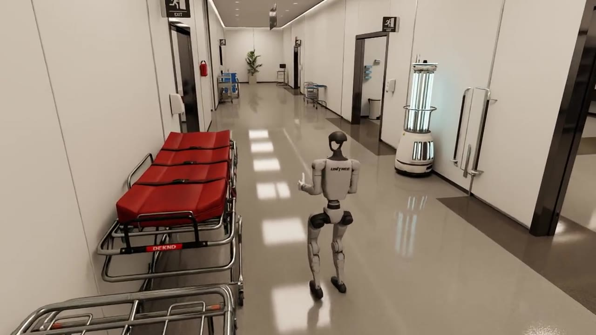
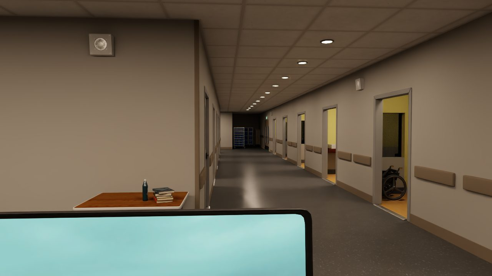

Humanoid deployment automation
Off-the-shelf humanoids, trained for your floor
Unitree, AgiBot and other accessible humanoids are being bought, but out of the box they do very little. Kyne is software that adapts each robot to your site and trains it for the job, and our engineers install it with you.
Simulation: Unitree G1 in WardZero, AgiBot G2 in the pack-off cell
Platforms and tools we build on
We make the humanoids you can buy today do useful work in your building
Kyne builds localised humanoid deployment automation: software that takes a robot from a simulated copy of your site to a tested skill on your floor, with our engineers on site for the last step.
Selected work

Manufacturing
AgiBot G2 pack-off cell: a wheeled humanoid packing sealed bags into cartons at the end of a line
Read case study
Healthcare
WardZero: a simulated UK hospital, with fire doors and bed lifts, where a Unitree G1 trains before it meets patients
Read case study
Your site
Your facility: we build a simulated version of it and test the robot there before you buy one
Start a programmeFrom a simulated copy of your site to a robot on your floor
Our approach
- 01Site twin
- 02Demonstrate
- 03Train
- 04Validate
- 05Deploy
Every deployment starts in simulation. Our software builds a model of your site, generates the training data, trains the robot’s skills and tests them against the checks we will use on site. Only then does the robot come through your door.
Our software talks to the robot through the manufacturer's own interface from day one, so the code we test in simulation is the code we install.
How we workMeasured in our projects
We measure what we build and we say where each number came from.
These figures come from our two showcase projects. Both run in simulation today, and each case study explains how the number was measured and what has not been tested yet.
Pilot dataset
20/20
generated episodes ended with the bag in the carton.AgiBot G2 pack-off cell
Drive-in accuracy
0.57cm
final position error after a 2.0 m drive into the cell.AgiBot G2 pack-off cell
Map accuracy
99.6%
of mapped wall cells within 0.10 m of the true walls.WardZero
Parallel training
2,048
simulated robots learning at once on a single RTX 3070.WardZero


We pick the robot that fits the task, and we will tell you when the right answer is a conveyor.


Thinking about humanoids for your site? Start with a simulation of it.
Tell us about the building and the job. We will tell you which robot could do it, what the hard parts are and how to find out for sure.